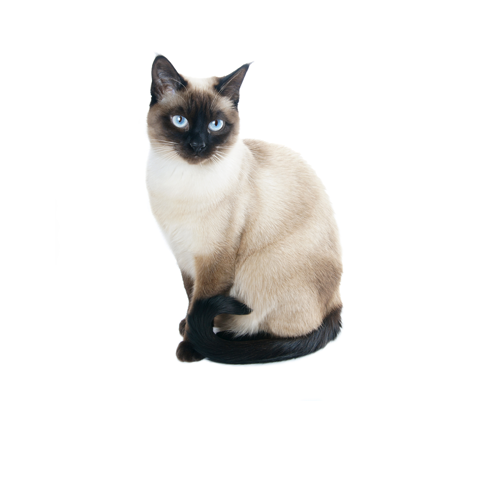
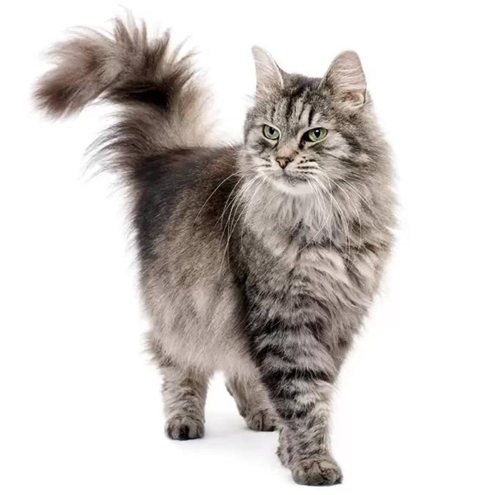

Menú
| Raza | Descripcion | Imagen |
| Persa | Gato de cara ancha y aplanada, con pelaje largo y abundante. De carácter noble y amable, se adapta bien a la vida en interiores y disfruta de la compañía humana. Se encuentra en varios colores como blanco, gris, negro y marrón |
|
| Siames | De cuerpo esbelto y pelaje fino, con un patrón de color claro en el cuerpo y oscuro en patas, cola, hocico y orejas. Sus ojos son azul celeste. Es muy curioso, independiente y vocal, con un maullido característico |  |
| Siberiano | Originario de Siberia, tiene un pelaje denso y triple capa para protegerse del frío. Puede presentar varios colores y patrones. Es sociable, cariñoso y juguetón |  |
© 2025